There are mechanical vibrations all around us. Even when you are talking, the vibrations from the sound is resulting in subtle vibrations of the objects’ surfaces around you. We can extract these vibrations if we instrument a sensor that converts the vibration into electrical signal, and the signal sent to a receiving device like a computer can be later played back into sound again.
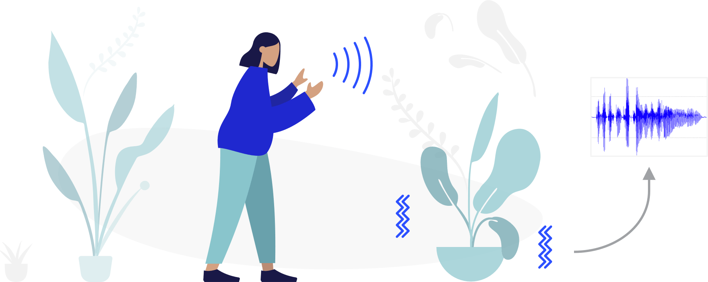
That is exactly what ZEUSSS does. ZEUSSS, Zero Energy Ubiquitous Sound Sensing Surface, is a flexible self-powered microphone with signal communication capability developed by COSMOS Team. The way it senses sound is based on the principle of static electricity. When two materials come in contact, they exchange charges. ZEUSSS is made from a FTP film and a copper coated paper. When there’s sound, the films vibrate and produce electrical signal. So the sound sensing process of ZEUSSS is self-sustained.
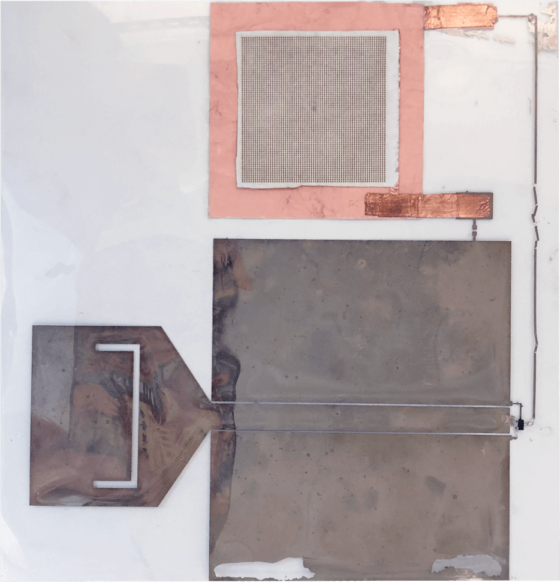
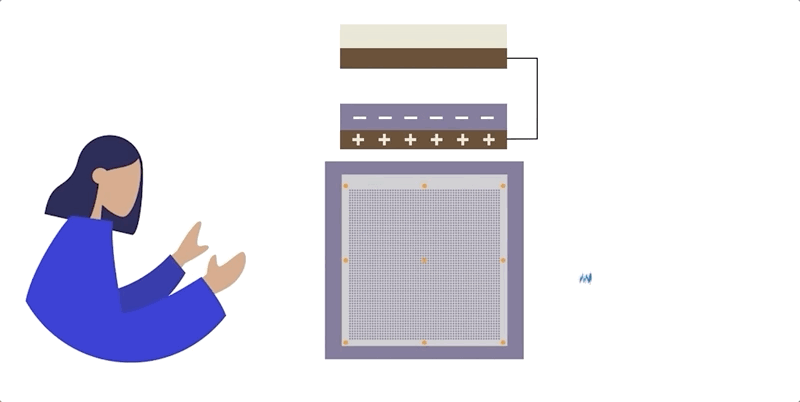
Objective
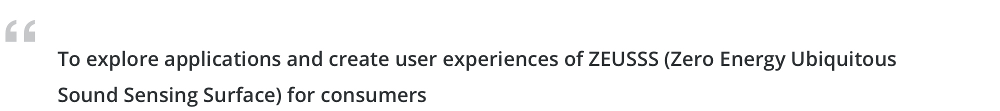
Project Information
Category
MS HCI Master Project @ Georgia Tech / Individual
Keywords
Ubiquitous Computing, Smart Homes, Wearable Hardware User Experience, Voice Interaction
Duration
Aug. 2018 - Apr. 2019
Tools
Paper and pen, Sketch, Python, Raspberry Pi Google AIY Voice Kit, Google Assistant API
Process
The main challenge I encountered in this project is that I have a technology, not a design problem. An extra round of exploratory research was conducted before I was able to enter the main house of UCD.
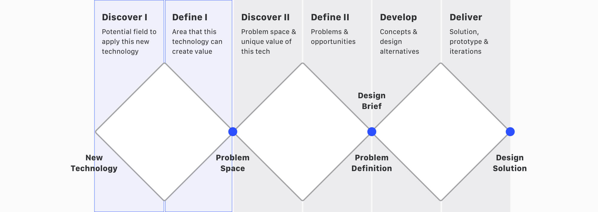
02.The 1st Diamond
Exploratory Expert Interviews
In order to find a promising area that ZEUSSS can create value, I started off by doing exploratory interviews with experienced practitioners from 7 different industries. The purpose of the interviews was to explore how this technology can be applied to their industries, to discover potential problem space and then identify an area I should focus on.
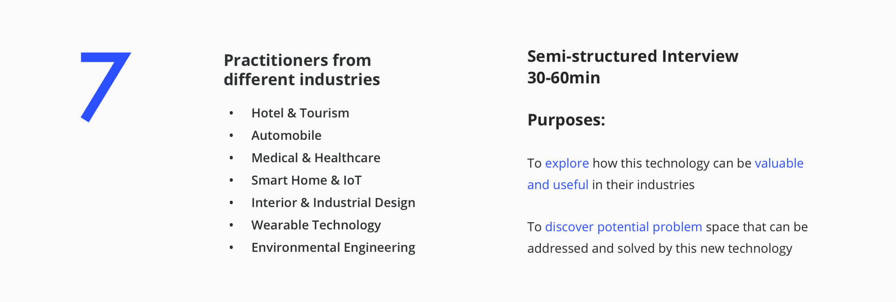
Refined Project Scope
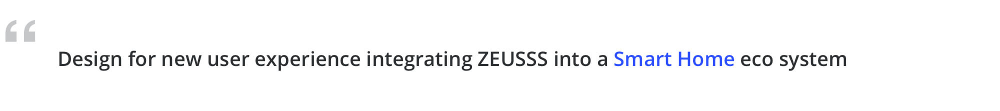
03.The 2nd Diamond
Key Insights
Literature review and online research on Smart Homes were conducted to explore the problem space and discover existing user problems. Based on the research findings, I synthesized the key values of ZEUSSS and further defined the problems I would like to address through the design.
Opportunity Statement
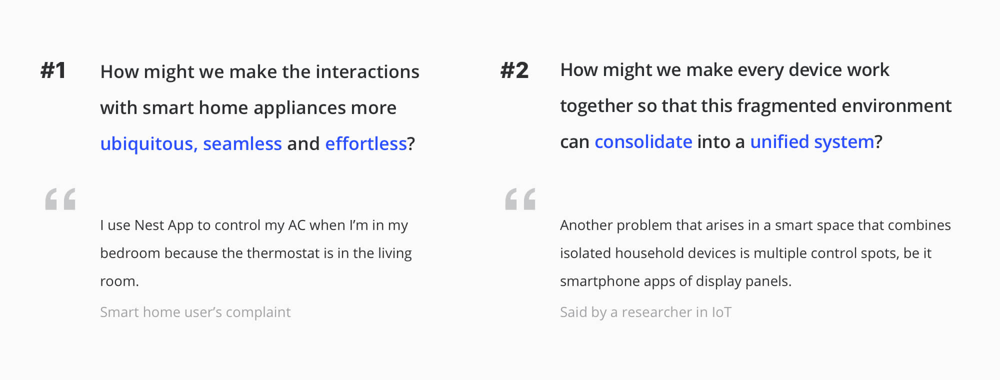
04.The 3rd Diamond: Develop
Brainstrom & Initial Concepts
Inspired by the problem discovered through previous study and insights from the user research, I did the first round of brainstorm and then integrated the ideas into 3 main concepts.
Concept 1: An embedded gesture-based controller for smart home appliances
It is designed to be either embed or attach ZEUSSS patch(removable) to any surface in the household and to be used as a remote controller to control home appliances. The problem addressed is to provide a unified and ubiquitous controller to control smart home appliances so as to save the time and effort to look for the right app or remote controller.
Two interaction models were developed based on the concept. In the first model, each patch is dedicated to a specific home appliance and is embedded at where the user would normally interact with that appliance. Each appliance can be controlled by multiple patches. In the second model, each patch was not preassigned what it controls. The user needs to assign the patch through a set of gestures and then control the appliance.
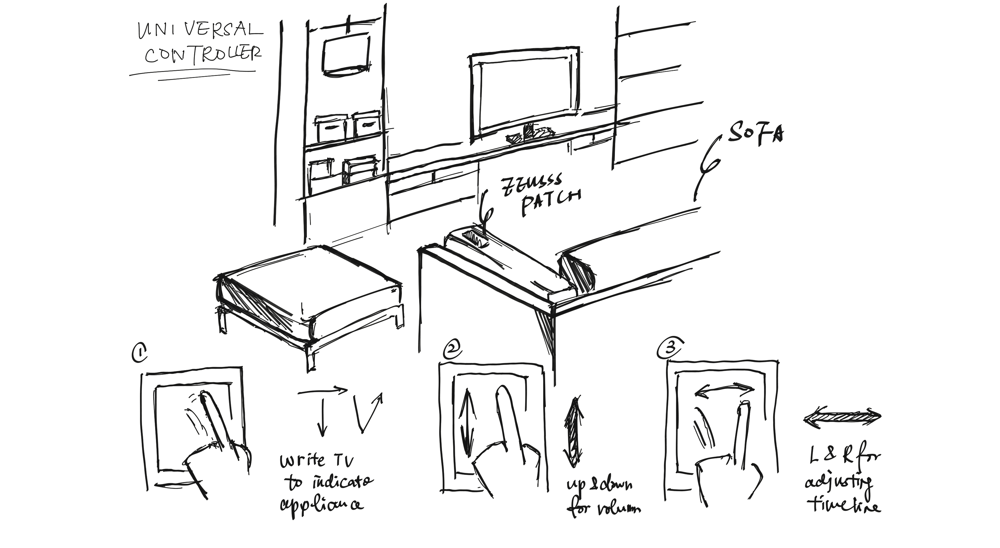
Concept 2: A reprogrammable sticker for quick and convenient home supply management
It is shipped as a sheet of sticker patch and each patch can be linked to an item through a mobile application. When it is linked, the user will be able to add a home supply or a grocery item to the shopping list. The concept is to release the user’s memory burden by helping them complete a mundane but frequent task quickly.
Concept 3: A removable voice interaction interface that extends the reach of smart home speakers.
The device includes a ZEUSSS patch as the voice input and an e-ink display as the visual output. The user can interact with the smart home speaker through the device using voice command and the display provides information in a visual manner including text and graphics.
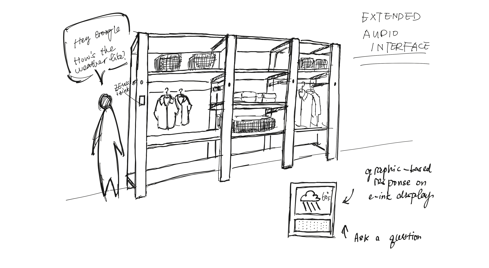
Concept Feedback Sessions
I then conducted a round of concept feedback sessions. 11 participants who are smart home users were recruited. In the session, participants provided feedback based on the sketch and interaction description of each concept, and then evaluated the concepts from these 5 perspectives by filling out a Likert scale questionnaire. The qualitative data were analyzed using affinity mapping.
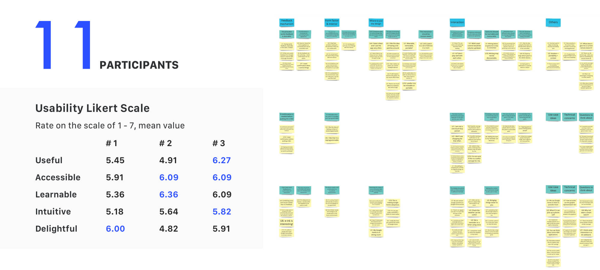
Design Directions
Based on the user needs defined through the concept feedback session, and also the capabilities or constraints of ZEUSSS, I was able to further delineate the design directions.
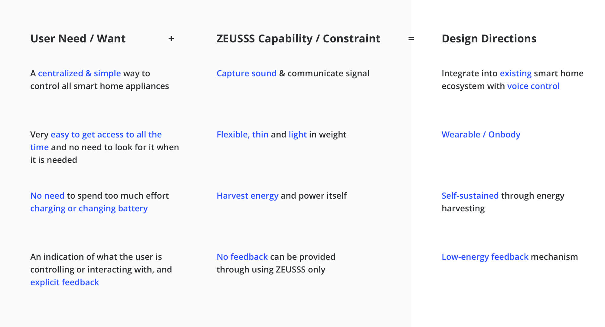
Design Direction Validation Survey
In order to validate the design directions, I created an online survey to ask about current user experience using smart home appliances and also mobile or wearable smart devices when the users are at home.
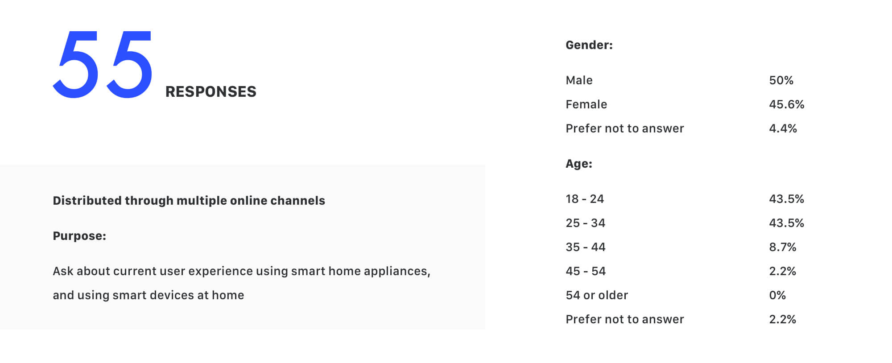
Form factor: Wearable?
The first question to answer through the survey is that if wearable is a desirable form factor?
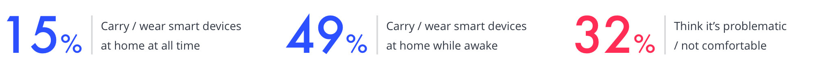
Power Solution: Self-sustained?
Regarding the battery problem, do people care about it? In the open question asking about the challenge they encountered, a lot of people filled in battery and charging. Actually, it is one of the main reasons that they cannot carry or wear the device while they are at home.
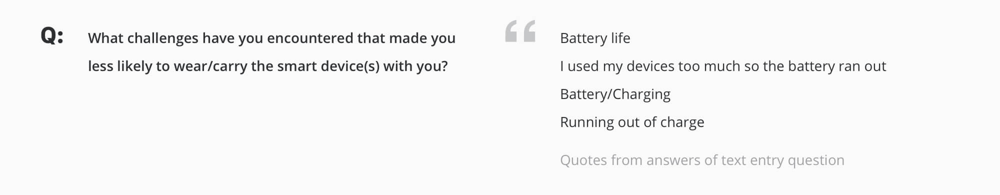
Interaction: Voice?
How about voice interaction? Is it an effective, efficient, and enjoyable way to interact with the smart home ecosystem?
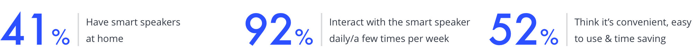
05.The 3rd Diamond: Deliver
Final Design
VISSH Patch, voice interaction surface for smart homes, is a flexible patch that extends the reach of smart home speakers. It is designed to be attached to the clothes you wear at home, enabling onbody voice interactions with the speaker at every spot within your household. It is wireless, thin, and flexible so that you can carry it around with you all the time.
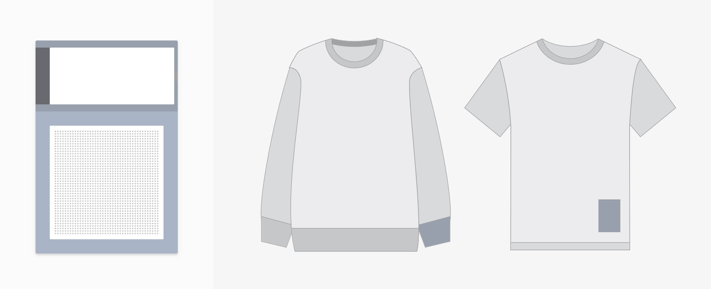
It consists of a ZEUSSS microphone to capture voice, an e-ink display to provide visual feedback which consumes very little energy, powered by a flexible battery that using the solar panel here to harvest energy for it.
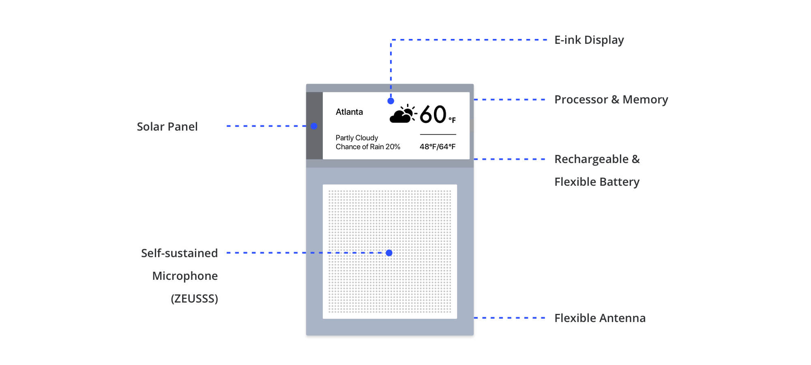
Target Audience
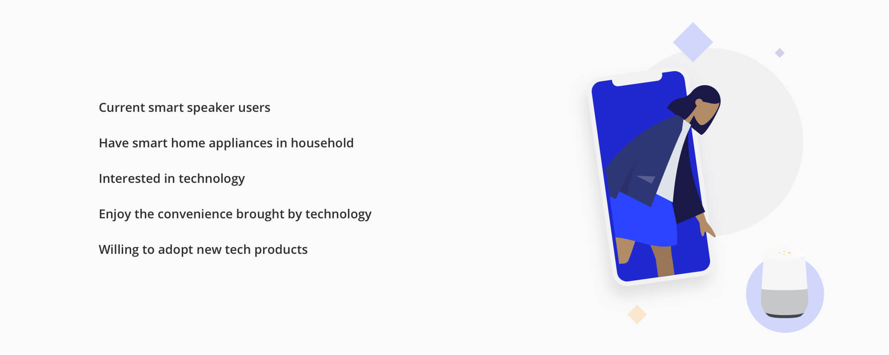
Scenario 1: Different Rooms
The first one is when the user and the speaker are in differents rooms - they cannot hear each other. When the user talks to the VISSH patch, it sends the audio to the speaker. When the response comes back, user will read it from the e-ink display.
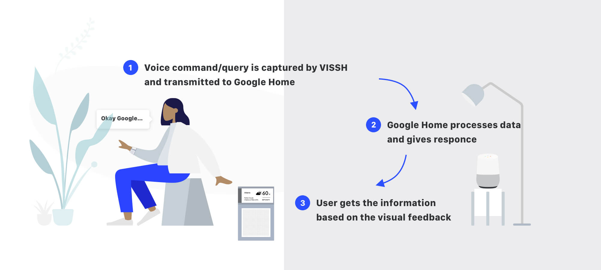
Scenario 2: Same Room
If the user and the speaker are in the same room, in addition to the visual feedback provided by the e-ink display, the user will also be able hear the audio feedback at the meantime.
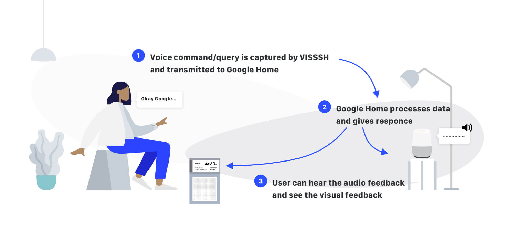
Use Cases
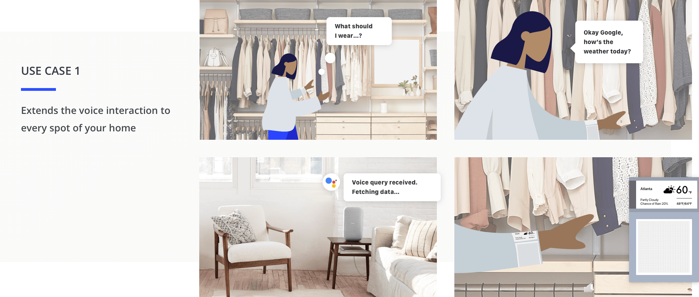
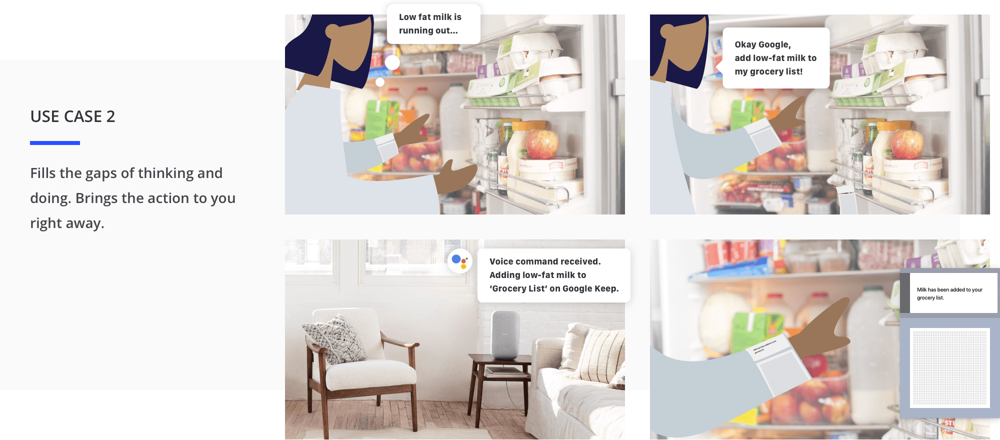
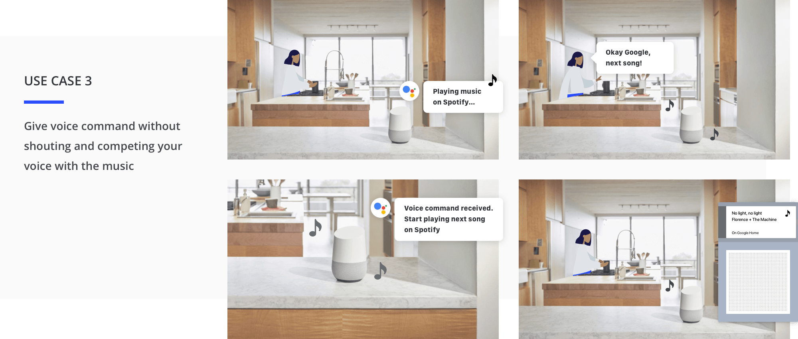
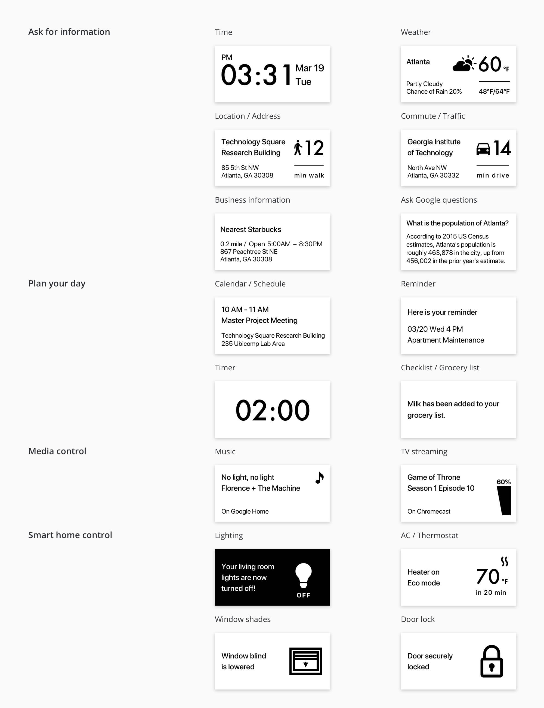
Prototype
A set of hardware prototype was made In order to conduct a usability test, including a concept model prototype which gives the user the touch and feel of the form factor, and an interactive prototype which simulates the interactions for evaluating the user experiences.
Concept Model Prototype
The concept model prototype consists of a ZEUSSS microphone, and a 2.13-inch flexible e-ink display module. The two electronic elements were glued on a soft female Velcro patch. 2 strips of male Velcro patch were stitched on the cuff of a shirt, so that the VISSH patch can be attached to and removed from the shirt easily.
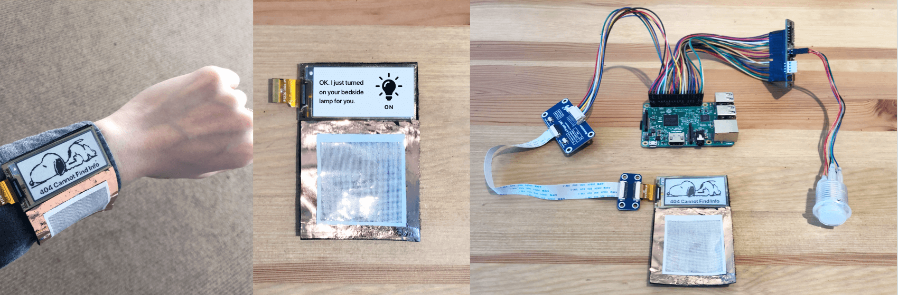
Interactive Prototype
The interactive prototype was developed using Raspberry Pi, Google AIY Voice kit and Google Assistant API. When the VISSH patch is plugged into the Raspberry Pi, the microphone on Google AIY Voice kit capture sounds constantly and the Assistant API enables the prototype to recognize what people are talking to it. The prototype wakes up to hot words ‘OK Google’ and ‘Hey Google’, and responds to voice commands. (Header pin mapping: green for Google AIY Voice Kit, blue for e-paper display)
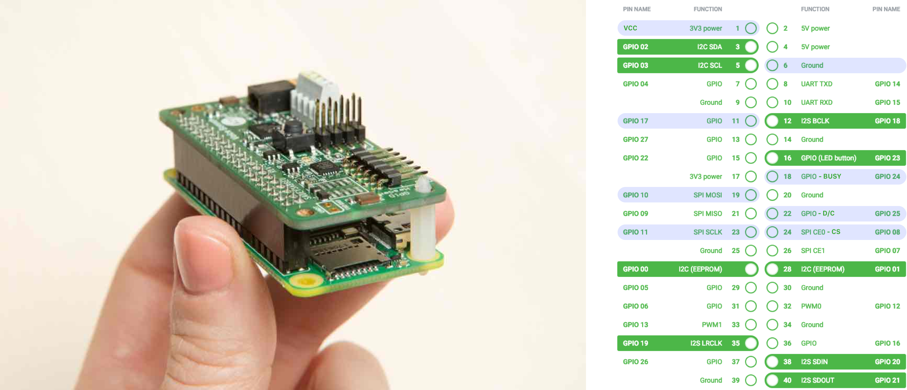
Demo Video
Usability Test
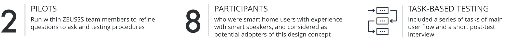
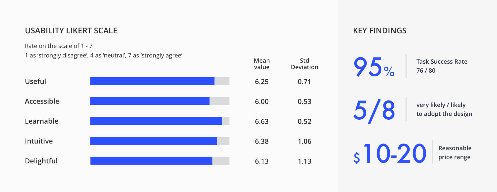
Iterations
User Interface Templates
To improve the glanceability of the content displayed on the e-ink display, and reduce the required effort for the user to read the information, a set of user interface templates were designed. Template 1 applies to scenarios including asking the weather, commute condition, address, etc. Template 2 applies to scenarios like asking Google questions, business information, calendar/schedule, setting/retrieving reminder and grocery list, etc. And Template 3 is designed for smart home controls like controlling music, video streaming, adjusting thermostats, turning on and off lights, etc.
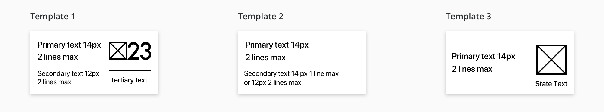
UIs for the Different Interaction States
The second change is to design UIs to show states when the VISSH patch is listening and when it finishes listening and start to request data. It is designed to make sure that the user knows when the patch is interactable so that the user will not feel confused while waiting for the response to come back. This also mitigates the privacy concern as when the patch wakes up to the hot words and is actively listening, the user could tell from the interface.
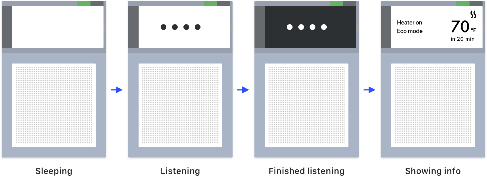
Physical Switch and Sound Capturing Range
Another refinement is to address the privacy issue through hardware changes. A physical switch was added with a color-coded indicator. The user can turn it off when he/she does not want to be heard.
Also through adjusting the size of ZEUSSS patch integrated here as the microphone, the sound capturing range can be adjusted. According to the usability test insight, an arm-length range is preferred. While the device is not being used, the user could keep it at somewhere else, for example, in the drawer, so that the sound capturing is disabled due to distance.
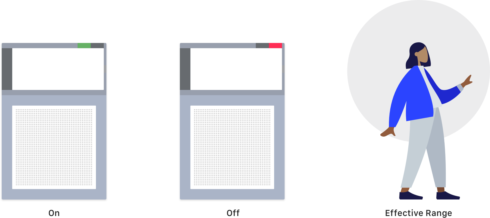
Future Work
To achieve more desirable user experiences, there are technical explorations as well as further user studies needed to be done. Currently, ZEUSSS is made of FTP and copper-coated paper. Even though the use cases for VISSH are limited to the indoor environment, a wearable device tends to have a considerable amount of wearing, folding, and maybe tearing while being used. Durability is a significant concern in designing a consumer-facing wearable. Alternative materials that is more durable, and anti-wear and tear, are more desirable.
Signal communication technology needs further research as well. The first problem needed to be resolved is how to give a unique ID to each patch so that the system could identify which patch is being used and to which patch the response should be sent to. Also, analog backscatter, which is currently used for ZEUSSS’s data communication, has a limited range. Other technologies with a better range like BLE or Wifi require higher power, which adds difficulties to power harvesting and battery capacity.
From the user research perspective, testing the concept with higher fidelity prototype, especially with a wireless version which the user can actually wear on the body, is the next step. Usability tests completed in this project were task-based and the participants were sitting the whole time. Experimenting the concept in a more realistic household environment with the participant walking around will give the participant more pertinent experience as to how this should be in real use cases.